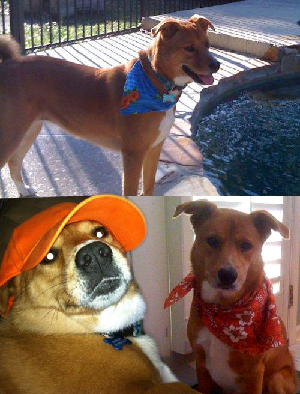

February 2015

Hi, my name is Georgia. Don’t let the name fool ya! I was born in Florida but moved up here to the cold north about four years ago. I’m 9 now and live in Harrisburg, Pennsylvania with my mommies. I just had my birthday on December 19th. Truth be told, I’m not really sure how old I am. My 7 brothers and sisters and I were abandoned and left on the doorstep of the animal shelter in Jacksonville. They all found their people first. It seemed like an eternity that I was in that cold cage by myself with no one to play with. One day my mommy found me. She picked me up, hugged me and kissed me, took me home and everything has been coming up roses since. I live in a great neighborhood and like to play with my two buddies, Colby and Duke. They are goofy boy dogs and I keep them in line. I spend my days in my chair where I can keep an eye on the neighborhood out the front window. My favorite things to do are taking my mommies on walks and riding in the car. I love it when we take long trips to Florida together. Sometimes, I get to stay home when mommies have to travel without me. That’s when I get to see Chris! She is the world’s best dog sitter ever! When my grandpa Titi comes to visit he treats me like the top dog. I get to sit on the couch to keep him company and he pets me and gives me treats all day long. He is my very best pal. I am a happy dog! Life is good and my mommies tell me I’m the pet of the month every month! |